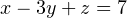

This is an example input file. Comparing it with the output it generates can show you how to produce a simple document of your own.
The ends of words and sentences are marked by spaces. It doesn’t matter how many spaces you type; one is as good as 100. The end of a line counts as a space.
One or more blank lines denote the end of a paragraph.
Since any number of consecutive spaces are treated like a single one, the formatting of the input file makes no difference to LATEX, but it makes a difference to you. When you use LATEX, making your input file as easy to read as possible will be a great help as you write your document and when you change it. This sample file shows how you can add comments to your own input file.
Because printing is different from typewriting, there are a number of things that you have to do differently when preparing an input file than if you were just typing the document directly. Quotation marks like “this” have to be handled specially, as do quotes within quotes: “ ‘this’ is what I just wrote, not ‘that’ ”.
Dashes come in three sizes: an intra-word dash, a medium dash for number ranges like 1–2, and a punctuation dash—like this.
A sentence-ending space should be larger than the space between words within a sentence. You sometimes have to type special commands in conjunction with punctuation characters to get this right, as in the following sentence. Gnats, gnus, etc. all begin with G. You should check the spaces after periods when reading your output to make sure you haven’t forgotten any special cases. Generating an ellipsis … with the right spacing around the periods requires a special command.
LATEX interprets some common characters as commands, so you must type special commands to generate them. These characters include the following: $ & % # { and }.
In printing, text is usually emphasized with an italic type style.
A long segment of text can also be emphasized in this way. Text within such a segment can be given additional emphasis.
It is sometimes necessary to prevent LATEX from breaking a line where it might otherwise do so. This may be at a space, as between the “Mr.” and “Jones” in “Mr. Jones”, or within a word—especially when the word is a symbol like itemnum that makes little sense when hyphenated across lines.
Footnotes1 pose no problem.
LATEX is good at typesetting mathematical formulas like  or or . The spaces you type in a formula are ignored. Remember that a letter like x is a formula when it denotes a mathematical symbol, and it should be typed as one.
Text is displayed by indenting it from the left margin. Quotations are commonly displayed. There are short quotations
This is a short quotation. It consists of a single paragraph of text. See how it is formatted.
and longer ones.
This is a longer quotation. It consists of two paragraphs of text, neither of which are particularly interesting.
This is the second paragraph of the quotation. It is just as dull as the first paragraph.
Another frequently-displayed structure is a list. The following is an example of an itemized list.
This is the rest of the second item of the outer list. It is no more interesting than any other part of the item.
You can even display poetry.
There is an environment for verse
Whose features some poets will curse.
For instead of making
Them do all line breaking,
It allows them to put too many words on a line when they’d
rather be forced to be terse.
Don’t start a paragraph with a displayed equation, nor make one a paragraph by itself.